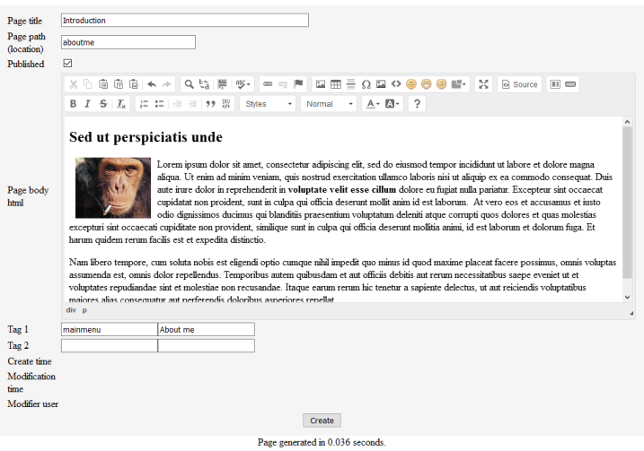
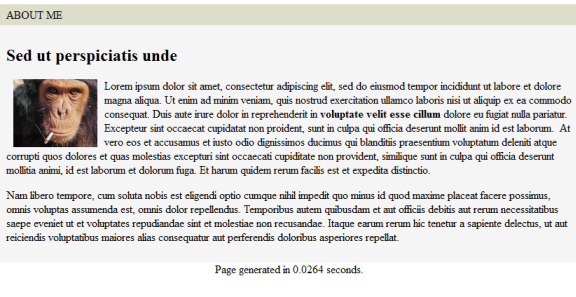

Page
The goal of the page module is to manage html pages in the CodKep system,
which content is stored in the database and has user editable UI based on CKEditor.
The pages are CodKep nodes with "page" nodetype.
Because the page is a node you can manage pages with the standard node managing urls which are the following:
node/page/add- Add a new page ( Try it )node/NID/edit- Edit the pagenode/NID/delete- Delete the pagenode/NID- View the page
The page editor (on node/page/add url):

After saving the page above with "publish" option enabled the CodKep makes it available under the "aboutme" path:

Fields of the page
| field name | Label on editor page | Description |
|---|---|---|
title | Page title | The page title which set by set_title() function. |
path | Page path | The page location. The page will be available on this url. |
published | Published | The page is only available when this option is checked. (true) |
body | Page body html | The html code of the page. |
tag1n | Tag1 (name) | First tag name. See route tags. (Do not include # sign!) |
tag1v | Tag1 (value) | First tag value. |
tag2n | Tag2 (name) | Second tag name. See route tags. (Do not include # sign!) |
tag1v | Tag2 (value) | Second tag value. |
Note: You can see in the editor screenshot the "mainmenu" tag name with "About me" value. This cause the page will be available in the main menu. See route tags.
Permissions of pages
You can set the permissions of the pages with the HOOK_node_access_page hook.
Read the node access chapter for details.
This sample code enables page creation and edit for all authenticated users and view for everyone:
function hook_mymodule_node_access_page($node,$op,$acc)
{
if($op == 'view')
return NODE_ACCESS_ALLOW;
if($acc->auth && ($op == 'create' || $op == 'update'))
return NODE_ACCESS_ALLOW;
return NODE_ACCESS_DENY;
}
Extending page type
Because a page is a simple Node object you can extend this "page" nodetype with
HOOK_nodetype_alter_NODENAME hook.
You can read the documentation of this method here.
This sample code adds a illustration file to the page:
function hook_mymodule_nodetype_alter_page($p)
{
$p->def['fields'][55] = [
'sql' => 'illustration',
'text' => 'Illustration',
'type' => 'file',
'container' => 'secure',
'filetypes' => 'image/jpeg;image/png',
'subdir' => 'pagepictures',
];
}
Hooks
The following hooks can be implement to interact with page module.
Note: Many of this hooks has an $obj parameter which is a container object holding references to the
object and other data structures which are modifiable by the hook.
| Hook | Description |
|---|---|
| HOOK_pageview_before($pagenode) | The return of this hook will be show before the page content. |
| HOOK_pageview_after($pagenode) | The return of this hook will be show after the page content. |
| HOOK_alter_pageroutes($obj) | It can alter the locations before defined by the page module. |
| HOOK_alter_pageshow($obj) | It runs before the page will show, it receives the page route. (It can modify the loaded location or do a redirection.) |